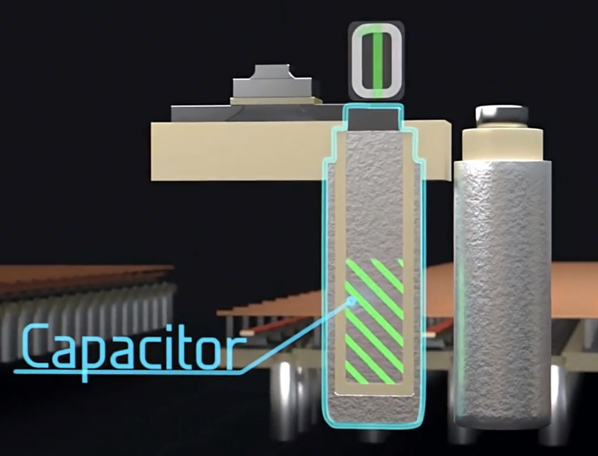
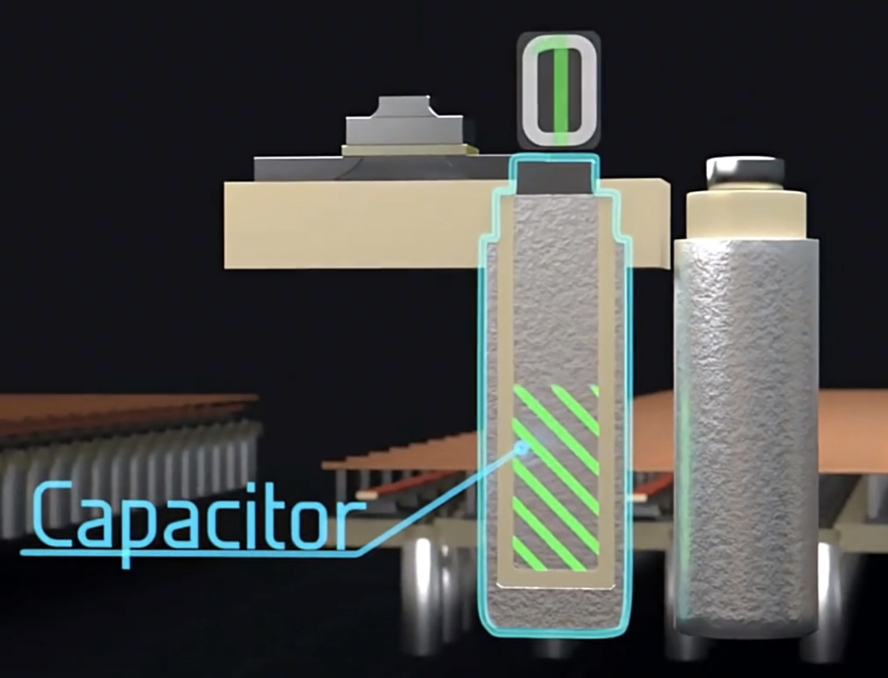
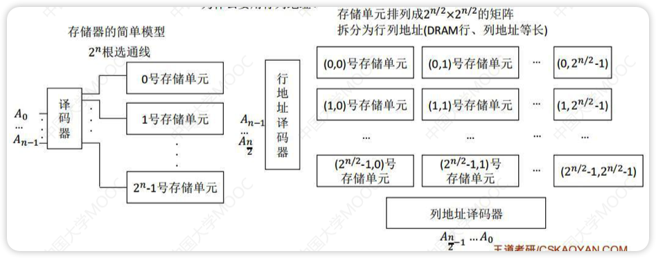

主存储器的基本组成
- 存储器最小的存储结构为存储元，0和1存储在电容中，通过MOS管的通断点控制电容充放电(存0或1)
 

8个存储元(存储字长=8)排在一排就构成了一个存储单元，接在一根数据总线上(总线宽度=存储字长=8)，若干个存储单元放一块就成了存储体(硬盘上的一个黑块块)
总容量 = 存储字数 * 存储字长
数据线的宽度 = MDR的宽度 = 存储字长
地址线的宽度 = MAR的宽度 = 存储字数 = 2存储单元行数
- 36位地址线的宽度为236


- 36位地址线的宽度为236
存储体+IO/读写电路+地址译码器+读写控制信号 = 主存储器

- 读RD/写WR控制线：决定芯片是进行读还是写操作
- 片选线CS：确定那个存储芯片被选中。可用于容量扩充
- 引脚最低数目 = 片选线(1条) + 控制线(RD+WR = 2条) + 数据线 + 地址线
寻址方式
题目没有明确指定按字编址，默认就是按字节编址(一字节8位)
- 64位计算机中，64位(bit) = 8字节(byte) = 1字(word)
- 32位计算机中，32位(bit) = 4字节(byte) = 1字(word)
存放一个机器字的存储单元，通常称为字存储单元，相应的单元地址叫字地址
存放一个字节的存储单元，称为字节存储单元，相应的地址称为字节地址
如果计算机中可编程的最小单位是字存储单元，则该计算机称为按字寻址的计算机
如果计算机中可编程的最小单位是字节，则该计算机称为按字节寻址的计算机
一个机器字可以包含数个字节，所以一个存储单元也可以包含数个能够单独编制的字节地址
- 例：一个16位二进制的字存储单元可以存放两个字节，可以按字编址，也可以按字节编址。当用字节编址时，16位存储单元占用两个字节地址
SRAM芯片和DRAM芯片
| SRAM(Static Random Access Memory) | DRAM(Dynamic Random Access Memory) | |
|---|---|---|
| 主要用途 | Cache | 主机内存 |
| 存储信息(核心区别) | 触发器，双稳态电路 | 栅极电容(前面的存储元) |
| 破坏性读出(读出后需要重写) | ❌ | ⭕️ |
| 需要刷新 | ❌ | ⭕️ |
| 送行列地址 | 同时 | 分两次送(地址线复用技术) |
| 运行速度 | 快(读出后不用重写) | 慢 |
| 集成度(容易混) | 低 | 高 |
| 存储成本(对比两种存储元结构就知道) | 高 | 低 |
| 功耗(发热量) | 高 | 低 |
| 易失/非易失性存储器 | 易失(断电后信息消失,电脑一关机就没了) | 易失(断电后信息消失,电脑一关机就没了) |
双稳态电路：

破坏性读出：前面的存储元结构，读出数据时，如果是1，电容中的电荷会流失，导致原有的信息被破坏，读出后需要有重写操作（再生）
DRAM的刷新
DRAM电容的电荷维持时间短，即使电源不断电信息(电荷)也会自动消失。因此每隔一段时间必须刷新，一般取2ms(刷新周期/再生周期)
DRAM的刷新是以行为为单位
一次完整的刷新过程只需要占用一个存储周期
刷新时间=存取周期
- 刷新其实还是往电容里充放电，与存取一样，所以时间相同
- 存取周期如果是0.5μs
存取周期>真正用于存取的时间
- 存取周期内，存取操作结束后仍然需要一些时间来改变状态
行列地址
- 

DRAM刷新
以行为单位，每次读出来一行然后重新写入，占用一个存取周期
假设DRAM内部结构排成128 * 128的形式，存取周期0.5μs，2ms共2ms/0.5μs=4000个周期
由存储器独立完成，不需要CPU控制
集中刷新
- 2ms内集中安排时间全部刷新
- 系统的存取周期不变，还是0.5μs
- 在2ms中的最后一段时间内专门进行刷新，这段时间被称为“死区”
- 全部刷新需要128行*0.5μs/行 = 64μs，即死区占用64μs
分散刷新
- 每次读写完就刷新一行
- 系统的存取周期变为1μs，前0.5μs正常读写，后0.5μs用于刷新

异步刷新
- 一共需要128次刷新，均匀分布到2ms中
- 即每隔2ms/128=15.6μs刷新一次，每15.6μs内有0.5μs的“死时间”

地址复用技术
- 由于DRAN芯片容量大，地址位数多，为了减少地址引脚线，采用地址复用技术
- DRAM因为分两次发送，长度相同，因此地址线可以复用，线数减少了一半
- 引脚数 = 地址线减半 + 数据线不变 + 行通选(1条) + 列通选(1条) + 读写控制线(2条)
- 片选线用行通选线替代
- DRAM采用地址复用技术，SRAM不采用
只读存储器
多模块存储器